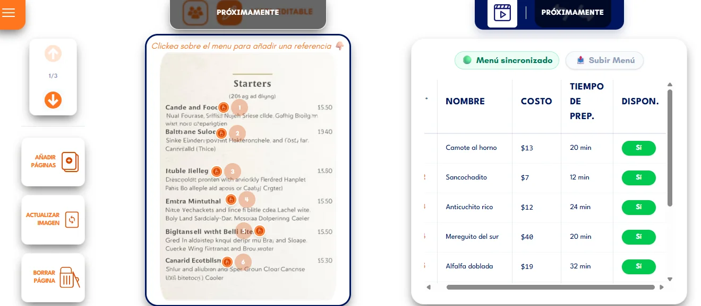
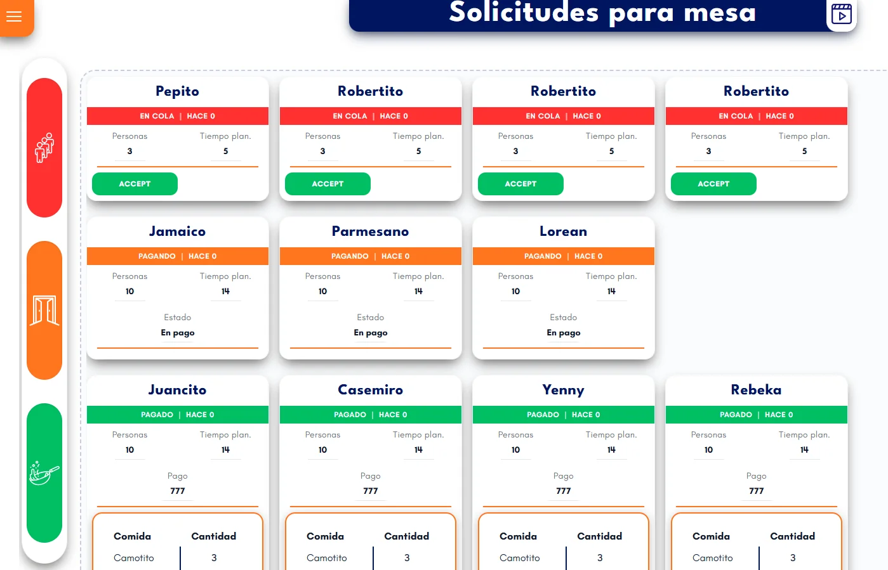
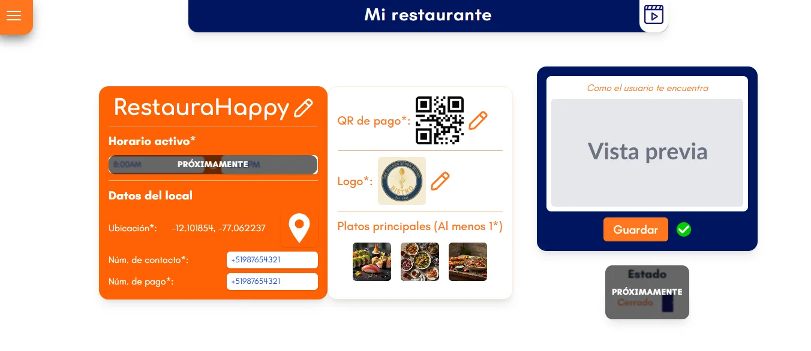

Optimiza tu cocina, multiplica la rotación de tus mesas y deleita a tus clientes.
Yummizi conecta a los comensales antes de su llegada para que tu cocina prepare pedidos con exactitud milimétrica. Cero mesas ociosas, máxima satisfacción.
Tecnología diseñada para el ritmo real de tu negocio
Tres vistas sincronizadas para coordinar el salón, la cocina y la gerencia en tiempo real.

1. Comandas Anticipadas en Cocina
Visualización ordenada de comandas programadas antes de que el cliente tome asiento en sala.

2. Gestor Inteligente de Colas Virtuales
Asignación dinámica de turnos, confirmación de asistencia y fin de aglomeraciones en puerta.

3. Analítica de Rotación y Tiempos
Métricas visuales de horas pico, platillos de mayor rendimiento y tiempos de servicio.
Mira a Yummizi en acción dentro de un restaurante
Descubre en menos de 2 minutos cómo la tecnología Optimize timing in your restaurant transforma un servicio tradicional.
Lo que ganas integrando Yummizi en tu restaurante
Hasta 35% más rotación de mesas durante los turnos de mayor afluencia.
Preparación de platillos predecible y sincronizada con la llegada del cliente.
Disminución radical de clientes que se van por filas desorganizadas en puerta.
Menú digital sincronizado con disponibilidad de insumos en tiempo real.
Datos operativos claros para reducir mermas y potenciar tu rentabilidad.
¿Listo para revolucionar tu servicio?
Súmate a la red de restaurantes que ya están eliminando las esperas innecesarias.
Unirse como Restaurante Aliado